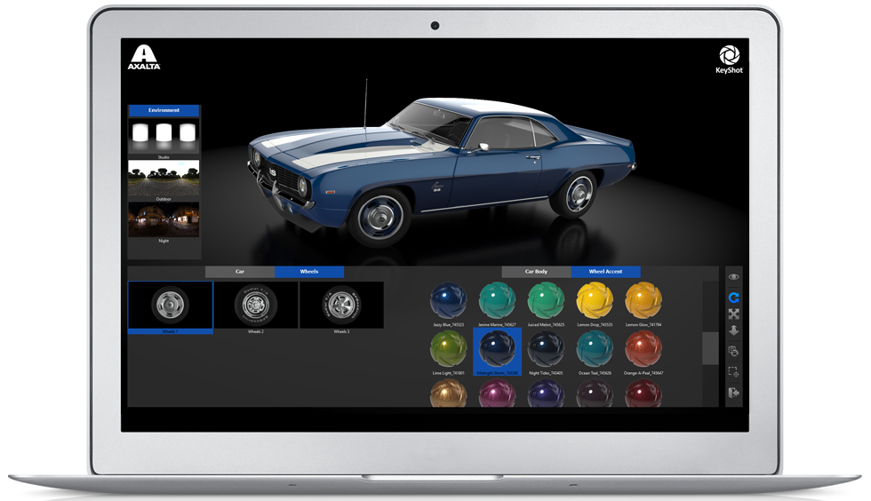

KeyShot Viewer es una aplicación gratuita e independiente que permite compartir escenas KeyShot de forma segura para la visualización, presentación y configuración de modelos 3D interactivos y realistas desde el punto de vista fotográfico, utilizando el mismo motor de renderizado de trazado de rayos en tiempo real que KeyShot para producir imágenes sorprendentes con velocidad y calidad.
Caracteristicas
KeyShot Viewer es una aplicación rica en funciones para complementar su revisión de diseño, presentaciones y colaboración. Las características incluyen:Calidad de render en tiempo real
Gire el modelo o seleccione opciones para ver la actualización de la escena instantáneamente, confiando en las capacidades de renderizado en tiempo real de KeyShot para proporcionar una experiencia de la más alta calidad posible.Soporte para el configurador
KeyShot Viewer es perfecto para los configuradores de productos personalizados creados con KeyShot Pro. Muestre variaciones ilimitadas de estudio, modelo y material para reseñas de productos o pantallas de alta resolución.Interacción Ratón/Touch
Explora con el ratón o con el dedo en un dispositivo táctil. Usa el ratón tradicional y los gestos con los dedos o la barra de herramientas desplegable para interactuar con el volteador, la bandeja y la plataforma rodante.Salida de imágenes/metadatos
Puntee para guardar una captura de pantalla en su ordenador. La salida de imagen incluye metadatos XMP con variación activa e información de la cámara que puede consultar para editar en KeyShot.Control total de visión de 360
KeyShot Viewer le permite explorar sus conceptos de producto, configuración y producción visual en 360 grados, desde lejos y cerca, sin necesidad de renderizar una sola imagen.Control de seguridad
Controle el acceso a los archivos y evite el uso indebido de la propiedad intelectual con protección de contraseña y superposición de marcas de agua, habilitadas al utilizar KeyShot Pro para guardar un KSP para KeyShot Viewer.Cómo funciona
Abra, vea e interactúe con una escena de KeyShot en tiempo real. Usa el ratón, el tacto, el lápiz o el lápiz táctil para explorar la escena o cambiar los materiales y la iluminación.
Ver video
